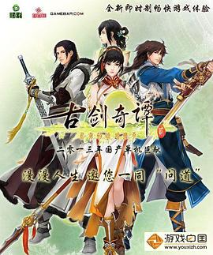

古剑奇谭贰
画面位居当今国产三剑之首，剧情重点如果认为在流月城，则可算上乘，谢衣的地位何止线索，感人度完全超过主角；但是4位主角渲染的真心不够唉。仙4前的剧情是我最喜欢的~
作品信息
| 作者 | 上海烛龙信息科技有限公司 |
| 出版社 | 方圆电子音像出版社 |
| 出版年 | 2013-8-18 |
| ISBN | 9787900539489 |
| 装帧 | 平装 |
| 定价 | 79.00元 |
最后一次看到是 2026-08-01T11:00:51+10:00 · 豆瓣原页

画面位居当今国产三剑之首，剧情重点如果认为在流月城，则可算上乘，谢衣的地位何止线索，感人度完全超过主角；但是4位主角渲染的真心不够唉。仙4前的剧情是我最喜欢的~
| 作者 | 上海烛龙信息科技有限公司 |
| 出版社 | 方圆电子音像出版社 |
| 出版年 | 2013-8-18 |
| ISBN | 9787900539489 |
| 装帧 | 平装 |
| 定价 | 79.00元 |
最后一次看到是 2026-08-01T11:00:51+10:00 · 豆瓣原页